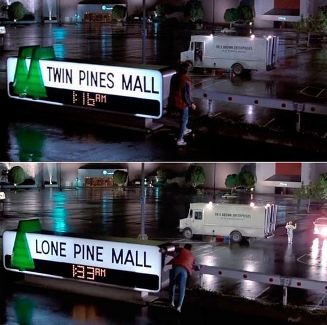

Els productes tecnològics
En alguna ocasió t’has preguntat com ha arribat un objecte a les teves mans, o com es fabriquen les coses que ens envolten?
Tot el que utilitzem cada dia —des d’una llibreta fins a un mòbil, passant per la roba o el menjar— té darrere un procés de producció i distribució.
Aquest procés ha canviat molt al llarg de la història i ens ajuda a comprendre com funciona i evolucionen els objectes o productes.
El que era el centre comercial Twin Pines, amb el temps s'ha reconvertit en una zona de creació i fabricació de productes de diversos tipos. Hi ha una zona de productes artesanals i altra de productes industrials.